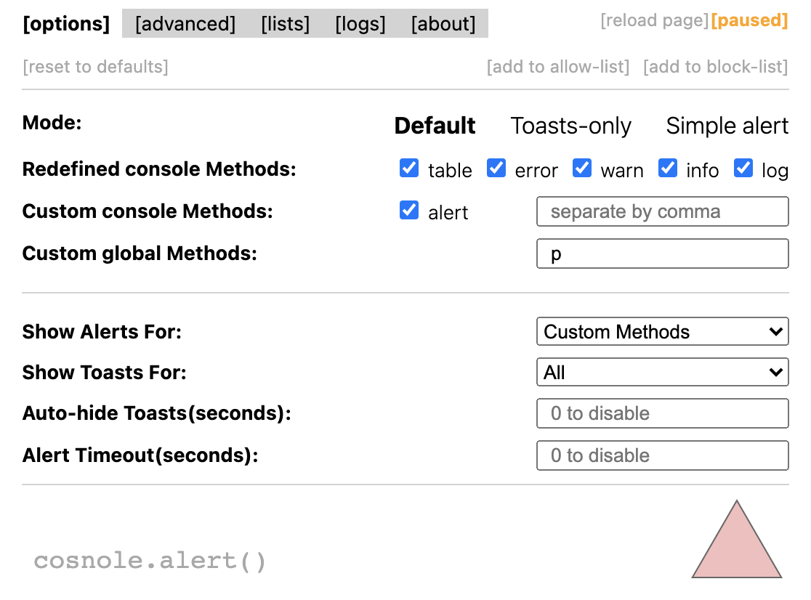
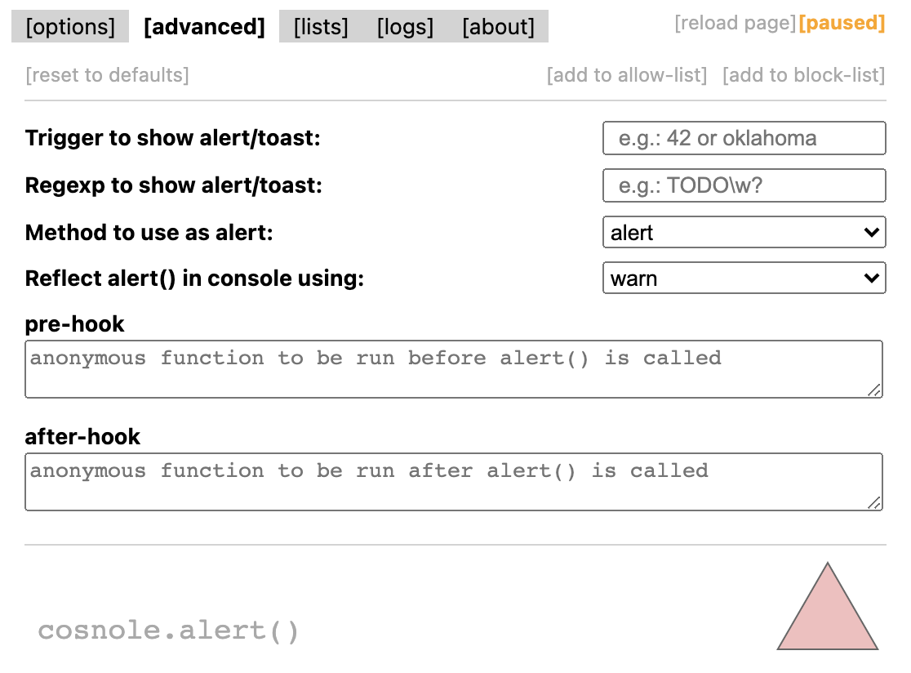
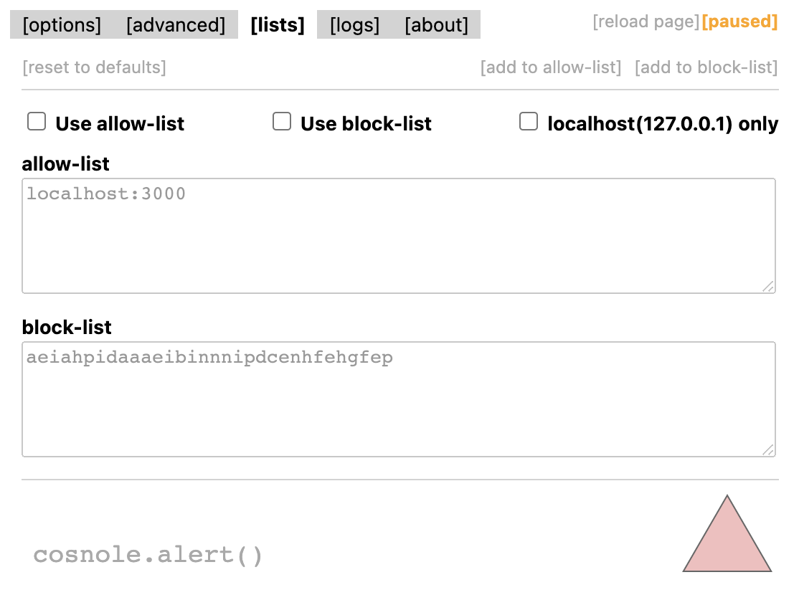
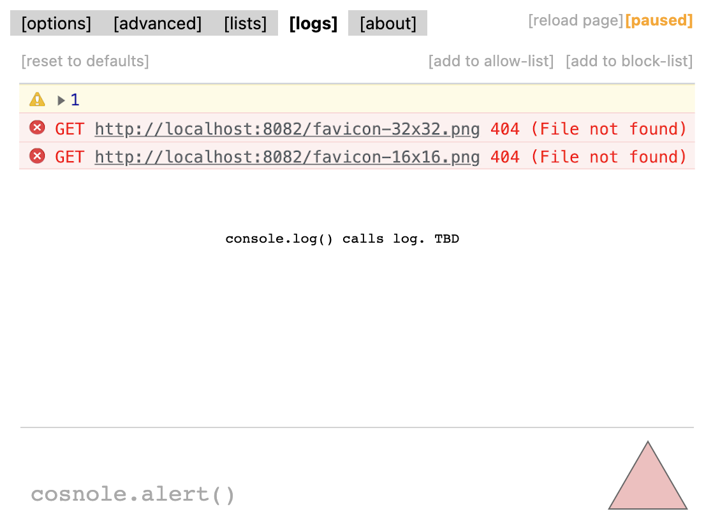

[ Some space left here for the most common navbars ]
▶...◀
cosnole.alert says
1
OK
cosnole.alert
Extension to shows logs, errors and warnings as toast messages to help you catch bugs faster.
Extends browser's console object with the alert() function.
Ok
reflect console.log() calls in toast messages
trigger window.alert() on console.log() calls
use console.alert() instead of window.alert()
define custom global methods to call alert()
use regexp or a "stop-word" to call alert()
enable it for localhost only or use allow/block-lists
use it to see console.log() events called in an iframe




The extension provides 3 modes to use.
You can switch the mode depending on your needs and the web-site's configurations